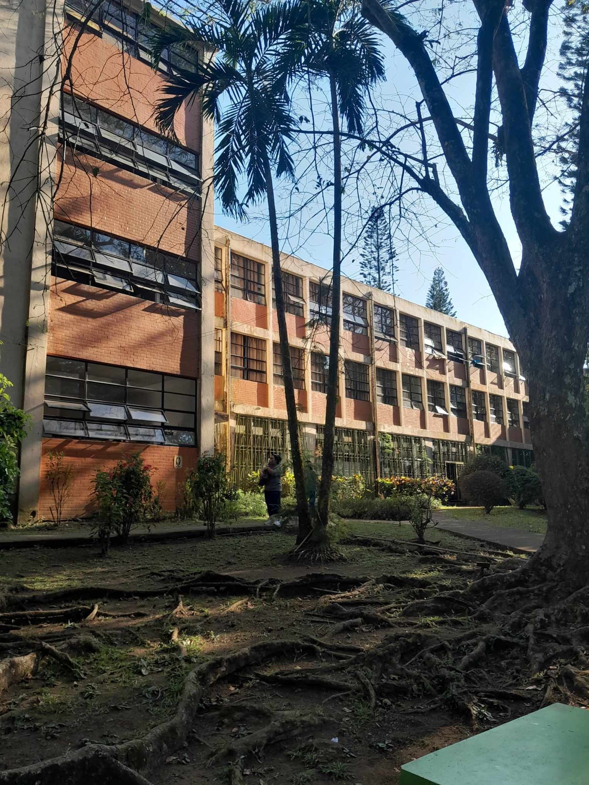
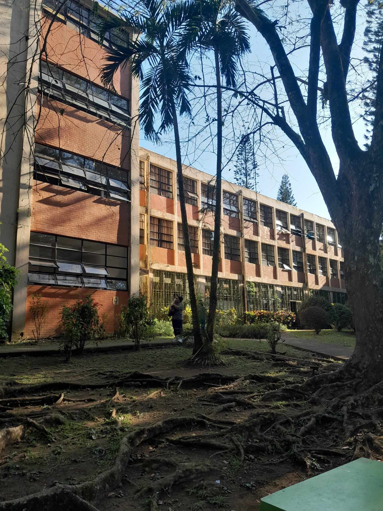
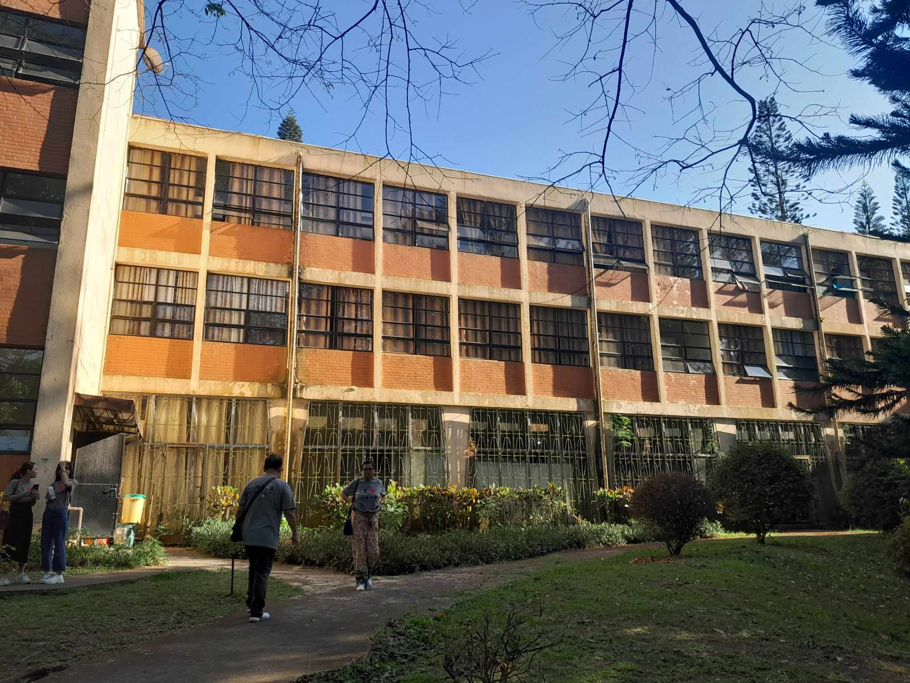
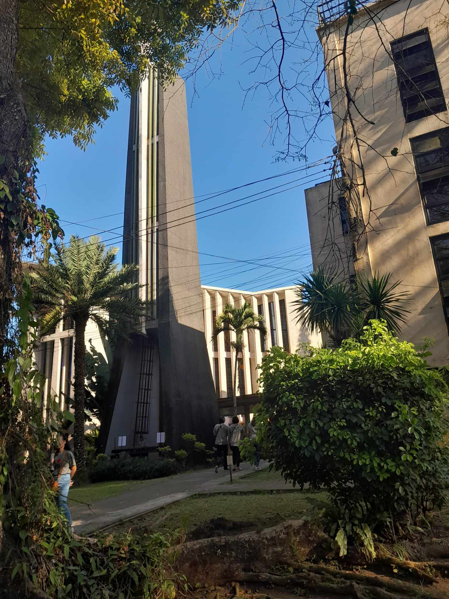
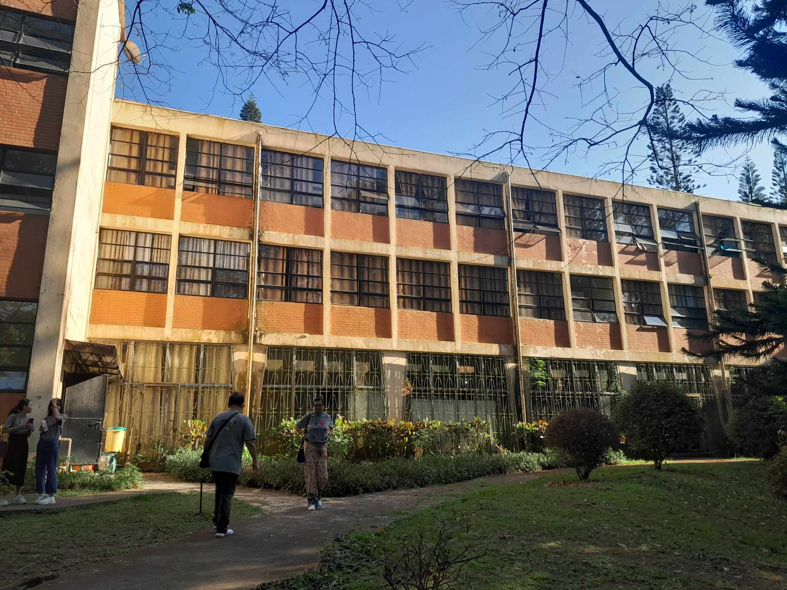
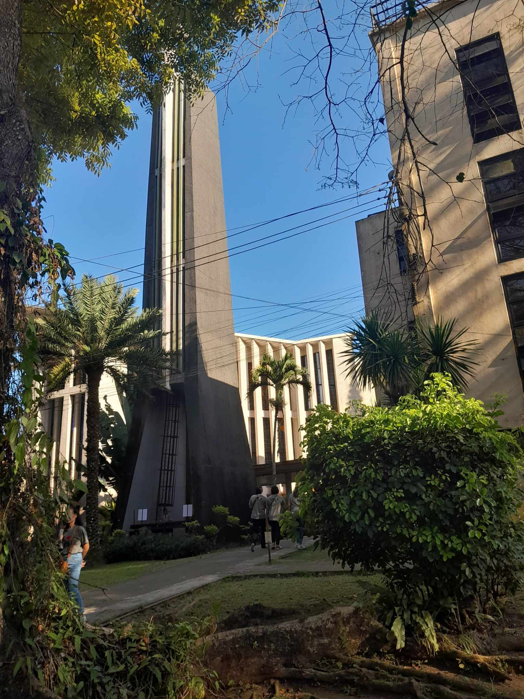

Holy Spirit Chapel, Tagaytay
The Holy Spirit Chapel, also known as the Adoration Chapel of the Pink Sisters, is likely not a separate chapel itself but part of the Convent of Divine Mercy in Tagaytay.
It's a Catholic monastery run by the Sister Servants of the Holy Spirit of Perpetual Adoration, also known as the Pink Sisters due to their pink habits. They are known for their devotion to perpetual prayer, offering prayers 24/7.
 

 




How to Get to:
The travel time from Manila to Holy Spirit Chapel in Tagaytay can vary depending on your starting point in Manila, traffic conditions, and the specific route you take. Generally, if you're driving or taking a private vehicle, the journey takes around 1.5 to 2.5 hours, depending on traffic.